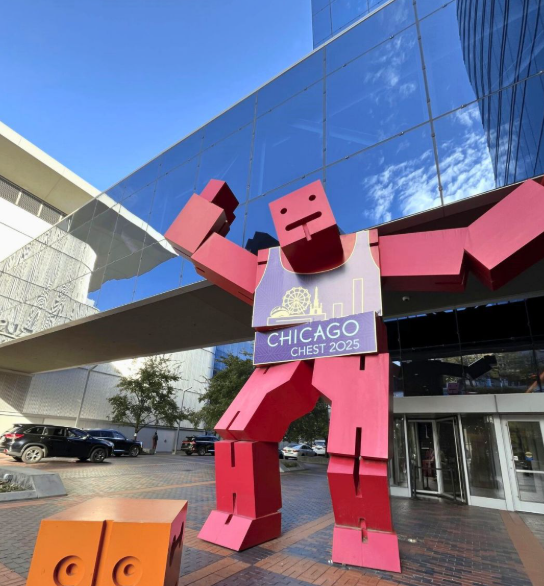
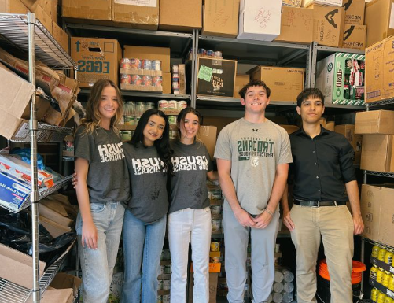
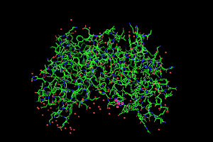

Hi there! I'm Luis Alfaro.
I'm a currently a student at the University of Illinois Chicago aspiring to be a Software Engineer.
This website serves as a collection of my previous positions and projects. Welcome!


During summer of 2025 I had the incredible opportunity to work with the
American College of CHEST Physicians. My task at CHEST was to create an
AI solution to resolve the overwhelming load of common questions the
help desk got at their annual event in Chicago. I had to learn everything
from scratch as I had no prior experience in making AI applications.
I had to learn the RAG pipeline and REST API's (specifically OpenAI's).
During the weeks before the event I got to oversee part of the deployment process
to make sure all went well. The event was atended by over 6000+ members of the college
and the help team was able to answer more important questions. There were issues with
the process such as some problems with memory as I was not using Langchain, but despite those
hiccups the chatbot was an overall success.
Note: The pictures at the side include a picture with my interns and I volunteering
and a picture of one of the entraces to the event.

During summer of 2024 UIC offered me an opportunity to work with the Chemical Engineering
department to make a water filtration system using packMol. This was earlier in my career
so I was much less experienced. I had to learn how to use linux and the unix terminal as
well as get around Python. I wasn't able to keep the images produced by these simulations
but the picture next to this should be able to give an idea of how these simulations look
(the image provided is not of a filtration). The software packMol took my calculations
and converted them into 3D coordinates which LAMMPS calculated the physics of and lastly pyMOL
displayed the filtration. For those unfamiliar these programs can all be run via the terminal
so none of these calculations were done on external software.